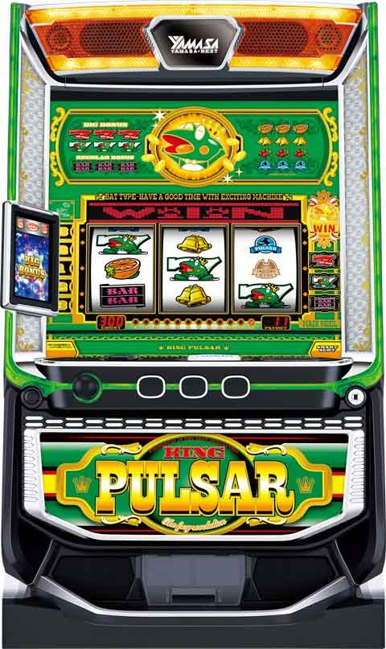

Lキングパルサー

 狙い目
狙い目
【リセット狙い】
150Gから
30Gから129Gまで
↑泡占いで剣、鏡、銅メダルは一旦やめ
※リセット時は1個か2個ストックある。
【ボーナス間天井狙い】
※下記の狙い目に差枚や泡占い示唆を考慮してボーダー調整。
480Gから
積極派 当選まで
慎重派 泡占いの示唆で押し引き 銅メダル、鏡は一旦やめて、550Gから拾い直し
【ゾーン狙い】
下記内容は攻めた狙い目です。
↓
240-256G
370-384G
480-512G
※ゾーン単体で期待値はほぼ無い。泡占いの示唆を見るために打つ。
512Gには若干仮天井の様なゾーンあり。
128G毎にチェック可能なため、泡占いの10-20G手前から打ち出す。示唆の内容で押し引き。
【泡占い別狙い目】
128G消化毎にサブ液晶で示唆確認可能。
金時計1時 規定150G以内当選濃厚
金時計2時 規定256G以内当選濃厚
銀時計3時 規定384G以内当選濃厚
銀時計5時 規定512G以内当選濃厚
ケロット柄メダル ストック5個以上
上記4つはボーナス当選まで
※ケロット柄は当選までかつストック残り2個or3個になるまで(慎重派は129Gやめでも良いかも)
時計6時〜7時 規定640-768G以内当選濃厚
示唆に合わせて384G以内濃厚まで来たら打てそう。
金メダル
積極派 ボーダー -350G
慎重派 ボーダー -250G
銀メダル
積極派 ボーダー -200G
慎重派 ボーダー -100G
銅メダル
積極派 ボーダー -100G
慎重派 ボーダー -0G
ティアラ、王冠 BB期待度示唆
ティアラ ボーダー -70G
王冠 ボーダー -120G
他の示唆は下記画像を参照。

【CZレベル狙い】
現状、単体で狙えるか不明。
CZレベルはCZ当選まで下がらない。
雷雨CZ失敗後はBB濃厚。
CZレベル４以上濃厚パターン
①リプ成立時のバックランプパターンが違う
②ベル揃い時の払出ランプがいつもより長い
サブ液晶のホタルはCZレベルが高いほど消えにくい？
【リボンガエル&バウンドストップ演出】
リボンガエル演出は64G以内のボーナス当選示唆
リプレイ、ベルでのバウンドストップは規定G数128G以内になると発生率が4倍にアップ。(頻度は不明)
【有利区間切れ狙い】
有利切れがかなり強そう。
差枚でボーダー調整出来そう。
129Gからの差枚を基準。
有利切れのサインが不明なため慎重に。差枚+2000枚超えた場合はその時点で有利切れてる可能性あり。
差枚+1500枚以上 ボーナス当選まで
差枚+1200枚以上 -150G
差枚+500枚以上 +0G
差枚-500枚以上 +100G
差枚-500枚未満 -20G
【ストック狙い】
期待値マイナスになる可能性あり。
また、ストック解放に時間かかる可能性あり。閉店4-5時間前までに打ち出し推奨。
128G以降の初当たりもストック消費？(CZ当選は除く)
メダルのストック示唆から残りの数を推測する事。
積極派 ストック2個以下になるまで
慎重派 ストック3個以下になるまで
やめ時
128Gの泡占いをチェックし、1G回してやめ(液晶129Gやめ)
攻めたやめ時
リセット時33-129G以内にG数での当選した場合に33G以内の当選が無ければ33Gやめ
※朝イチのみストックと思われる当選時はストックが無くなってる可能性があるため。
参考元
基本情報
- メーカー: セブンリーグ
- 機械割: 97.7% 〜 114.9%
- 導入開始日: 2024年03月04日（月）
- ゲーム性概要: 初代『キングパルサー』の遺伝子を受け継いだ『スマスロキングパルサー』が登場する。純増約5枚/Gの擬似ボーナスでストックシステムを再現していて、ボーナス終了後128G以内はボーナス期待度約70%。CZ「スコールチャンス」やボーナス1G連抽選など初代になかった要素も多数追加されている。


打ち方
打ち方・小役
打ち方（小役狙い）
［最初に狙う絵柄］

左リール上段付近にBARを目押し。オレンジ停止時以外は中＆右リールフリー打ちでOKだ。
［オレンジテンパイ時のみ中リールを目押し］

オレンジが上段までスベってくればオレンジ濃厚。中リールにオレンジ（赤7狙いでOK）を目押ししよう。
解析情報通常時
小役関連
小役確率
| 設定 | リプレイ | チェリー | オレンジ | リーチ目役 |
|---|---|---|---|---|
| 1 | 1/7.3 | 1/409.6 | 1/136.5 | 1/1724.6 |
| 2 | 1/7.3 | 1/409.6 | 1/134.3 | 1/1724.6 |
| 4 | 1/7.3 | 1/409.6 | 1/127.0 | 1/1560.4 |
| 5 | 1/7.3 | 1/409.6 | 1/120.5 | 1/1560.4 |
| 6 | 1/7.3 | 1/409.6 | 1/110.7 | 1/1424.7 |
※レア役以上合算は1/96.7～1/82.1
CZレベル
CZレベル概要
スコールチャンス（CZ）当選まで転落しない状態で、 レベルが高いほどCZ当選期待度がアップ 。レベルは5段階でCZ非当選のレア役や128G消化ごとに昇格が抽選され、レベル5ではレア役成立＝CZ当選になる。
CZレベルの性能
| 項目 | 内容 |
|---|---|
| 段階 | レベル1～5の5段階 |
| 昇格契機 | ボーナス非当選のレア役、128G消化ごと |
| その他 | CZ当選で初期段階を再抽選 |
CZレベルごとのCZトータル当選率
| CZレベル | チェリー | オレンジ |
|---|---|---|
| レベル1 | 20.3% | 10.2% |
| レベル2 | 40.2% | 15.2% |
| レベル3 | 60.2% | 25.0% |
| レベル4 | 80.1% | 50.0% |
| レベル5 | 100% | 100% |
［チェリー］CZ当選率詳細
| CZレベル | 通常 | 雷雨 |
|---|---|---|
| レベル1 | 19.5% | 0.8% |
| レベル2 | 38.7% | 1.6% |
| レベル3 | 55.1% | 5.1% |
| レベル4 | 69.9% | 10.2% |
| レベル5 | 75.0% | 25.0% |
［オレンジ］CZ当選率詳細
| CZレベル | 通常 | 雷雨 |
|---|---|---|
| レベル1 | 9.8% | 0.4% |
| レベル2 | 14.1% | 1.2% |
| レベル3 | 23.4% | 1.6% |
| レベル4 | 46.5% | 3.5% |
| レベル5 | 93.0% | 7.0% |
CZレベルごとのCZ当選確率
| 設定 | レベル1 | レベル2 | レベル3 | レベル4 | レベル5 |
|---|---|---|---|---|---|
| 1 | 1/806.6 | 1/476.6 | 1/303.1 | 1/178.0 | 1/102.4 |
| 2 | 1/798.6 | 1/472.4 | 1/300.3 | 1/176.1 | 1/101.1 |
| 4 | 1/771.9 | 1/458.3 | 1/290.9 | 1/169.7 | 1/96.9 |
| 5 | 1/746.8 | 1/445.1 | 1/282.2 | 1/163.8 | 1/93.1 |
| 6 | 1/707.5 | 1/424.0 | 1/268.3 | 1/154.5 | 1/87.1 |
各役の当選率自体に設定差はないが、オレンジ確率が高設定ほど高いため、結果的に高設定ほどCZに当選しやすくなる。
CZレベル昇格率
チェリーはCZに当選しなかった場合でも高確率でCZレベルが昇格するため、状況次第で追ってみるのもありだ。
［レア役→CZ非当選時］CZレベル昇格率 CZレベル1滞在時
| 移行するCZレベル | チェリー | オレンジ |
|---|---|---|
| レベル1 | － | － |
| レベル2 | 74.2% | 23.8% |
| レベル3 | 25.0% | 0.4% |
| レベル4 | 0.4% | 0.4% |
| レベル5 | 0.4% | 0.4% |
| トータル昇格率 | 100% | 25.0% |
CZレベル2滞在時
| 移行するCZレベル | チェリー | オレンジ |
|---|---|---|
| レベル1 | － | － |
| レベル2 | － | － |
| レベル3 | 49.2% | 10.2% |
| レベル4 | 0.4% | 0.4% |
| レベル5 | 0.4% | 0.4% |
| トータル昇格率 | 50.0% | 11.0% |
CZレベル3滞在時
| 移行するCZレベル | チェリー | オレンジ |
|---|---|---|
| レベル1 | － | － |
| レベル2 | － | － |
| レベル3 | － | － |
| レベル4 | 49.6% | 10.2% |
| レベル5 | 0.4% | 0.4% |
| トータル昇格率 | 50.0% | 10.6% |
CZレベル4滞在時
| 移行するCZレベル | チェリー | オレンジ |
|---|---|---|
| レベル1 | － | － |
| レベル2 | － | － |
| レベル3 | － | － |
| レベル4 | － | － |
| レベル5 | 50.0% | 10.2% |
| トータル昇格率 | 50.0% | 10.2% |
［ゲーム数消化時］CZレベル昇格率 CZレベル1滞在時
| 移行するCZレベル | 128G | 256G・512G | 384G・640G |
|---|---|---|---|
| レベル1 | － | － | － |
| レベル2 | 50.0% | 37.5% | 37.5% |
| レベル3 | 37.5% | 11.7% | 11.7% |
| レベル4 | 12.1% | 0.4% | 0.4% |
| レベル5 | 0.4% | 0.4% | 0.4% |
| トータル昇格率 | 100% | 50.0% | 50.0% |
CZレベル2滞在時
| 移行するCZレベル | 128G | 256G・512G | 384G・640G |
|---|---|---|---|
| レベル1 | － | － | － |
| レベル2 | － | － | － |
| レベル3 | 75.0% | 24.2% | 12.5% |
| レベル4 | 24.6% | 0.4% | 0.4% |
| レベル5 | 0.4% | 0.4% | 0.4% |
| トータル昇格率 | 100% | 25.0% | 13.3% |
CZレベル3滞在時
| 移行するCZレベル | 128G | 256G・512G | 384G・640G |
|---|---|---|---|
| レベル1 | － | － | － |
| レベル2 | － | － | － |
| レベル3 | － | － | － |
| レベル4 | 37.5% | 24.6% | 12.9% |
| レベル5 | 12.5% | 0.4% | 0.4% |
| トータル昇格率 | 50.0% | 25.0% | 13.3% |
CZレベル4滞在時
| 移行するCZレベル | 128G | 256G・512G | 384G・640G |
|---|---|---|---|
| レベル1 | － | － | － |
| レベル2 | － | － | － |
| レベル3 | － | － | － |
| レベル4 | － | － | － |
| レベル5 | 50.0% | 12.5% | 6.3% |
| トータル昇格率 | 50.0% | 12.5% | 6.3% |
ボーナスループモード
ボーナスループモード概要
ボーナスループモードは、 当選で32G以内のボーナス確定かつ、継続率に応じて同状態がループ する。ボーナスループ当選の有無は初当り（33G以降）のボーナス当選時に抽選。ボーナスループ中のボーナスはストックを消費しないため、33G〜128G間の引き戻しにも期待できる。
［有利区間が切れると上位モードへ］ 見た目上、判別できないがボーナス終了時に有利区間が切れた場合は32G以内のボーナス確定かつ70%ループ以上のモードへ移行。90%の選択比率は50%以上だ。
［モード中のCZ］

ボーナス中にストックしたCZでボーナスに当選した場合、ループ当選の権利は引き継がれるため、シンプルにCZで引いた回数分お得となる。
ボーナスループモードの種類
| 項目 | 内容 |
|---|---|
| モードの種類（ループ率） | 33%、50%、70%、90% |
| ボーナスループモード突入率 | ボーナス当選時の約1/3 |
※有利区間が切れた場合や擬似遊技が絡んだ場合、データ表示機が最大33Gになるケースもあり
プラネットランプ

ボーナス入賞時、ファンファーレとともにプラネットランプが点灯すれば90%ループのボーナスループモード確定。ほかにも山佐キャラのプレミアム演出やギガガエルなど、ボーナススループモードを示唆するパターンは複数存在する。
プラネットランプ点灯率
| 状況 | 点灯率 |
|---|---|
| ボーナスループモード90%時かつ引き戻し濃厚時 | 約20% |
スコールチャンス（CZ）
スコールチャンス概要

スコールチャンスには雨のみの「通常」と上位版の「雷雨」が存在する。 通常ではリプレイorレア役を引けばボーナス、雷雨ではリプレイorベルorレア役を引けばBIG確定 。さらに、雷雨は失敗しても次回ボーナスがBIGになる。 また、CZ経由でボーナスに当選した場合はストックを消費しないため、ボーナス後の連チャンに期待できるところもポイントだ。
スコールチャンス（CZ）性能
| 項目 | 内容 |
|---|---|
| 当選契機 | 通常時のレア役、ボーナス中のストック |
| 継続ゲーム数 | 3～5G（雷雨は4or5G） |
| ボーナス期待度 | 約40%（雷雨は約70%） |
| 消化中の抽選 | リプレイ・レア役を引けばボーナス確定 （雷雨はベルもOK） |
| その他 | 当選時は3Gの雷雨前兆を経て突入、 レア役での成功はBIG確定 （雷雨でのレア役はBIG＋ボーナスループ）、 リーチ目役での成功はボーナスループモード確定 |
レア役で成功した場合の特典
| CZ | レア役 | リーチ目役 |
|---|---|---|
| 通常 | BIG確定 | BIG＋ボーナスループモード |
| 雷雨 | BIG＋ボーナスループモード | BIG＋継続率90%の ボーナスループモード |
CZ合算確率
| 設定 | 確率 |
|---|---|
| 1 | 1/410.9 |
| 2 | 1/400.8 |
| 4 | 1/380.4 |
| 5 | 1/357.9 |
| 6 | 1/333.5 |
［通常］

［雷雨］

CZ継続ゲーム数振り分け
| 継続ゲーム数 | 通常 | 雷雨 |
|---|---|---|
| 3G | 92.1% | － |
| 4G | 6.3% | 50.0% |
| 5G | 1.6% | 50.0% |
ストック
ストックの有無
本機では内部的なボーナスストックを抽選していて、ストック所持時はボーナス後33G〜128G間の引き戻し期待度が大幅にアップする。
解析情報ボーナス時
ツラヌキ・有利区間
ツラヌキ条件・恩恵
| 項目 | 内容 |
|---|---|
| 条件 | ボーナス終了時に差枚数が2050枚を超えた時 （1G連や即CZがない場合に有利区間をリセット） |
| 恩恵 | 32G以内のボーナス確定 |
| 恩恵 | 継続率70%以上のボーナスループモードへ移行 （90%の選択比率は50%以上） |
ボーナス
ボーナス概要

ボーナス中はレア役と1枚役でスコールチャンス（CZ）とBIG1G連を抽選。 当選するたびにCZの通常→雷雨→1G連と昇格していく（いきなり1G連もアリ） 。1G連はBIGだけでなく90%のボーナスループモードが確定するため超強力だ。 枚数の減算は押し順ベルのみなので、レア役や1枚役時は減算されない。
ボーナス性能
| 項目 | 内容 |
|---|---|
| 平均獲得枚数 | BIG：307枚、REG：105枚 |
| 消化中の抽選 | レア役と1枚役でCZとBIG1G連抽選 |
| その他 | BIG1G連当選時は 継続率90%のボーナスループモード確定 |
［スコールチャンス・1G連抽選］

基本的に宝箱演出の当選の有無を告知。赤箱がデフォルト、金箱なら当選の期待大だ。
※継続率90%のボーナスループモードが確定する1G連はあくまでボーナス中に当選した1G連が対象。ボーナス終了後1G目の当選したボーナスは対象外
CZ・BIG1G連当選率
レア役時の抽選はチェリーの期待度が高い。1枚役からのCZ当選率は高設定が大きく優遇。BIG中のレア役は！ナビ系が出るので、！系ナビ演出非発生で宝箱が出現＝1枚役での抽選になる。
［レア役］ボーナス中のCZ当選率
| 役 | 当選率 |
|---|---|
| チェリー | 30.1% |
| オレンジ | 10.2% |
演出情報
演出モード

3つの演出モードをサブ液晶から選択することができる。
演出モードの特徴
| モード | 特徴 |
|---|---|
| ノーマルモード | ● スマスロキングパルサーを味わえるオススメモードで、CZ（雨前兆含む）などの新規演出が発生。 |
| 先ゲコモード | ● 基本的にはノーマルモードと一緒だが、期待度が高い前兆時に、先ゲコが発生しやすい。 |
| 初代モード | ● CZ（雨前兆含む）が表面上見えなくなり、新規演出（ボーナス中の宝箱演出などを含む）が出現しない。初代キンパルに限りなく近づけたモード。 |
| 裏初代モード | ● 初代モードと同じゲーム性で、CZが筐体ランプで判別できるモード。CZを見逃したくないかつ初代キンパルの感覚で遊びたい人向け。 |
先ゲコモードの数値
| 項目 | 抽選値など |
|---|---|
| 先ゲコ発生時のボーナス期待度 | 約70% |
| 先ゲコのボーナス占有率 | 約70% |
| 先ゲコなしでのボーナス当選 | 約75%でBIG |
［先ゲコモードの12連ランプ］

パチンコの先バレ的な演出で、アツい前兆時に基本的に12G目が点灯。いきなり7G目が点灯すると!?
［裏初代モードへの変更］

初代モードを選択している状態でPUSHボタンを長押しすると裏初代モードに変更可能。「ゲコゲコ」という鳴き声とともにPUSHボタンの色が紫に変化するのでわかりやすい。
［裏初代モードのCZ］

CZは筐体左右のランプが水色に発光。最初はわかりづらいかもしれないが、慣れてくると違和感なく楽しめる。
［初代モードでも切り替えればCZが表示］ 初代モードで内部的にCZの場合、モードを切り替えればサブ液晶にCZが表示されるため、怪しいと思ったらモードを切り替えてチェックするのもありだ。
通常時
泡占い
128G消化ごとに発生する泡占い（サブ液晶タッチ）で次回のボーナスや天井ゲーム数が示唆される。

泡占いの表示アイテム別示唆
| アイテム | 示唆 | |
|---|---|---|
| 剣 | 高継続率のボーナスループモードに期待!? | |
| 鏡 | 早い初当りに期待!? | |
| ティアラ | 次回のBIG期待度約75% | |
| 王冠 | 次回BIG確定 | |
| メダル | 銅 | ストック1個以上 |
| メダル | 銀 | ストック2個以上 |
| メダル | 金 | ストック3個以上 |
| メダル | ケロット柄 | ストック5個以上 |
| 銅時計 | 7時 | 天井768G以内 |
| 銅時計 | 6時 | 天井640G以内 |
| 銀時計 | 5時 | 天井512G以内 |
| 銀時計 | 3時 | 天井384G以内 |
| 金時計 | 2時 | 天井256G以内 |
| 金時計 | 1時 | 天井150G以内 |

バウンドストップ
リプレイ・ベル時のバウンドストップは規定ゲーム数までの残りが128G以内になると発生率が4倍にアップするため、発生時は注目しておこう。
バウンドストップ発生タイミングごとの成立役
| タイミング | 成立役 |
|---|---|
| 第1停止時 | リプレイorベルorオレンジ |
| 第2停止時 | ベルorオレンジ |
| 第3停止時 | オレンジ |
成立役別のバウンドストップ発生確率
| 役 | 規定ゲーム数が128G以内 | 規定ゲーム数が129G以降 |
|---|---|---|
| リプレイ | 1/128.0 | 1/512.0 |
| ベル | 1/32.0 | 1/128.0 |
| オレンジ | 1/4.2 | 1/4.2 |
| リーチ目役 | 1/4.6 | 1/4.6 |
CZレベル示唆パターン
| パターン | 示唆 |
|---|---|
| サブ液晶のホタル | ホタルの滞在ゲーム数が 長いほど上位段階に期待 |
| リプレイ成立時の バックランプ | いつもと違う光り方なら レベル4以上＆レベル5に期待 |
| ベル時のベル揃い時の 払い出しランプ | いつもより長く光ると レベル4以上＆レベル5の期待大！ |
CZレベルごとのホタルが消える（減る）確率
| CZレベル | 多い→少ない | 少ない→消える |
|---|---|---|
| レベル1 | 約1/8 | 約1/4.0 |
| レベル2 | 約1/8 | 約1/4.0 |
| レベル3 | 約1/20 | 約1/4.0 |
| レベル4 | 約1/64 | 約1/4.0 |
| レベル5 | 約1/128 | 約1/4.0 |
［サブ液晶のホタル］

レア役後や128G消化時などに出現するホタルの滞在ゲーム数が長いほど、上位のCZレベルに滞在している可能性が高い。
※初代モードでは発生しない
［リプレイ成立時のバックランプ］

光り方がいつもと違えばCZレベル5のチャンス。
［ベル揃い時の払い出しランプ］

いつもより点滅パターンが長いとCZレベル5の期待大！
［チェリー］CZ当選期待度
| 役 | 初代モード以外 | 初代モード |
|---|---|---|
| 演出なし | 約39% | 約41% |
| 右からカエル→こける | 約72% | 約41% |
※初代モードはCZレベルを考慮した平均値
［オレンジ］CZ当選期待度
| 役 | 初代モード以外 | 初代モード | |
|---|---|---|---|
| 演出なし | 約80% | 約20% | |
| バウンドストップ | 約20% | 約20% | |
| 右からカエル | 通常 | 約15% | － |
| 右からカエル | 高速 | 約50% | － |
| 右からカエル | 大ジャンプ | 雷雨濃厚 | － |
ボーナス
BIG中のBGM
| 連チャン回数 | BGM |
|---|---|
| 初回 | 初代キングパルサー |
| 2連目 | アレンジVer（新作） |
| 3連目 | キングパルサーエース |
| 4連目 | キングオブキングパルサー |
| 5連目 | ジャイアントパルサー |
裏ボタン
カエル連続判別

前兆中の7匹カエル連続は 小役成立時に「演出なし」や「右からカエル」に書き換える抽選 がおこなわれる（7匹カエル時に小役が揃えば本前兆確定のため）。前兆中（本来7匹カエルが出るゲーム）に演出なしが選択された場合、 PUSHボタンを押すと右からカエルが出現 。もちろんフェイク前兆中も発生するため、PUSHボタンで右からカエル出現＝ボーナス確定ではないが、前兆を楽しむ要素のひとつとして活用してみよう。
7匹カエル連続・小役成立時の書き換えパターン
| 書き換えパターン | 示唆 |
|---|---|
| 演出なしに変更 | チャンスボタンで判別可能 |
| 右からカエルに変更 | 次ゲームでの連続に期待 |
| 書き換えせずに7匹カエル継続 | ボーナス確定 |